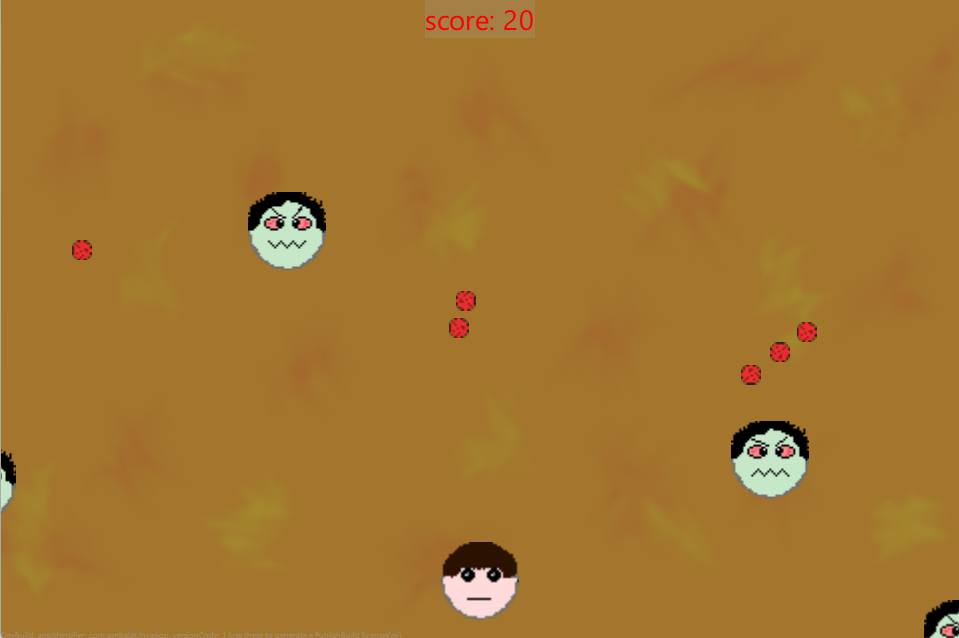
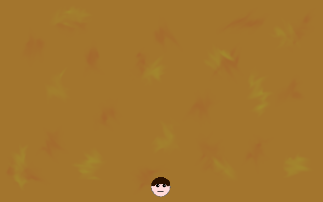
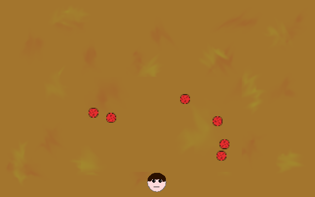
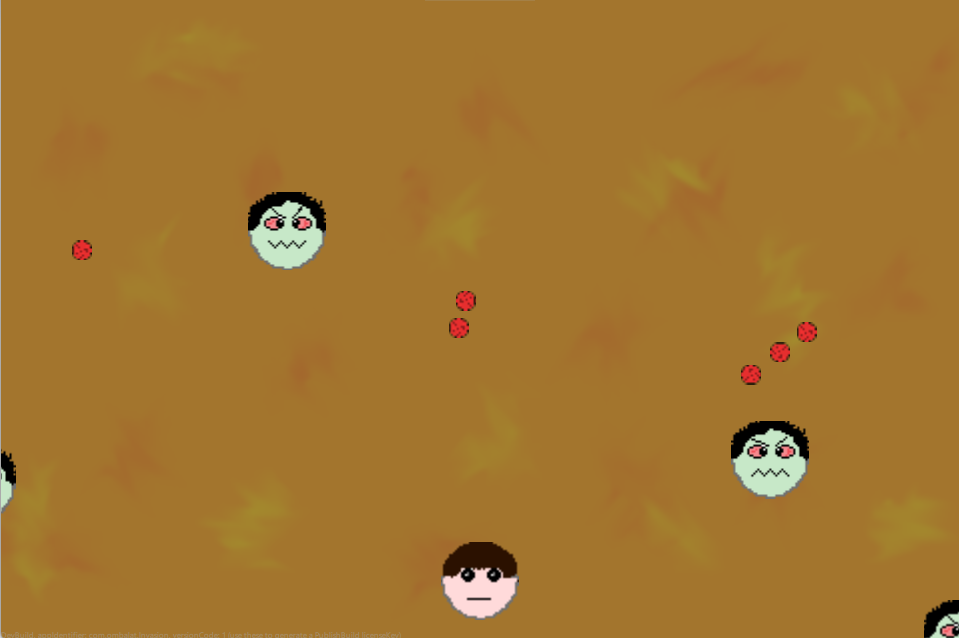
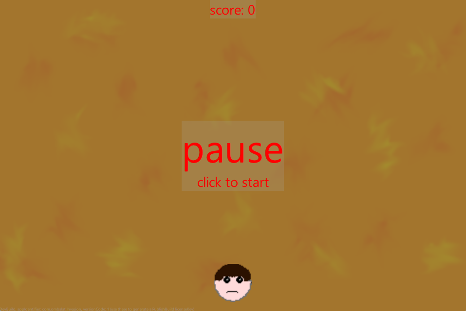
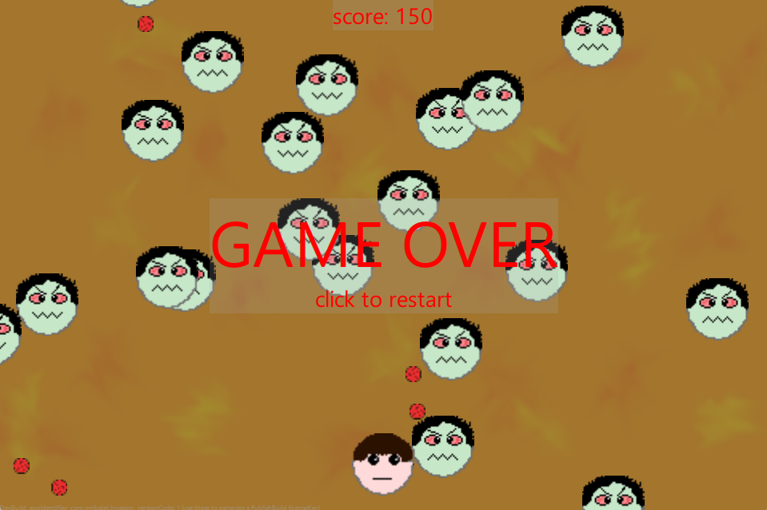

Welcome to the step-by-step guide on creating a cross-platform game using Felgo. In this tutorial, we will break down an example game called Invasion into its core components. The full source code of the game is available at GitHub. Below you will find a small preview image to give you an impression of the game's look and feel.

Here's a quick overview of the small shooter game we are going to build:
This tutorial follows Felgo's best practices: modular entities, movement animations and collision detection.
We will cover:
qml/ GameScene.qml entities/ Player.qml Enemy.qml Bullet.qml items/ OverlayText.qml assets/ img/ background.png player.png enemy.png bullet.png
If you do not want to use or create your own images, you can simply reference the image at GitHub.
After setting up the project structure and creating the necessary files and directories, we will clean up the template project a bit. Open qml/Main.qml and remove all content except for the basic scene structure:
qml/Main.qml:
import Felgo 4.0 import QtQuick 2.0 GameWindow { id: gameWindow // ... activeScene: scene // ... screenWidth: 960 screenHeight: 640 Scene { } }
As a first step, we create the GameScene where all the game components come together. We move the Scene element from qml/Main.qml to the dedicated file qml/GameScene.qml. Here, we also add the background image as starting point. To display the image from assets/img/background.png we use the Image component. The background should fill the whole screen, regardless of the resolution. We achieve this with anchors.fill: gameWindowAnchorItem. Furthermore, the background should not be stretched or distorted, so we set fillMode: Image.PreserveAspectCrop.
To indicate whether the game is running, we add a gameRunning property to the GameScene. This will later be used, for example, to pause the game if the player is hit by an enemy.
qml/Main.qml:
import Felgo 4.0 import QtQuick 2.0 GameWindow { id: gameWindow // ... activeScene: gameScene // the size of the Window can be changed at runtime by pressing Ctrl (or Cmd on Mac) + the number keys 1-8 screenWidth: 960 screenHeight: 640 // game scene where the actual game is located GameScene { } }
qml/GameScene.qml:
Scene { id: gameScene property bool gameRunning: true // background image Image { anchors.fill: gameWindowAnchorItem fillMode: Image.PreserveAspectCrop source: "../assets/img/background.png" } }
When running the project at this step, a screen with the background image will be displayed.
The player is an independent entity that can shoot bullets toward a mouse click. We center the player at the bottom of the screen. As base element we use EntityBase, as we will for all files created in the qml/entities directory. This is the base class of all Felgo entities and enables them to be controlled by the EntityManager.
For a visually appealing presentation, we use a GameSprite in combination with a GameSpriteSequence to implement animations. Our image consists of 4 frames, which are used by the GameSpriteSequence to animate the player.
qml/entities/Player.qml:
import Felgo 4.0 import QtQuick 2.0 EntityBase { id: player entityType: "player" // player size width: spriteSequence.width height: spriteSequence.height // player image GameSpriteSequence { id: spriteSequence running: gameScene.gameRunning GameSprite { frameCount: 4 frameRate: 1 frameWidth: 39 frameHeight: 39 source: Qt.resolvedUrl("../../assets/img/player.png") } } }
To actually make the player visible in the game, we need to add it to the GameScene directly below our background image. Here we also center it to the bottom of the screen:
qml/GameScene.qml:
Scene { id: gameScene property bool gameRunning: true // background image // ... // player Player { id: player anchors.horizontalCenter: gameWindowAnchorItem.horizontalCenter y: gameWindowAnchorItem.height - height - 10 } }
Now we will see the player positioned in the right place in our game.

In the next step, we implement shooting mechanics for the player. Let's start by creating the Bullet entity and defining the properties it needs. First, we need to save the direction and speed of the bullet. To give it a nice look, we will again use a GameSprite with 4 frames:
Similar to the Player, we add all of this to Bullet:
qml/entities/Bullet.qml:
import Felgo 4.0 import QtQuick 2.0 EntityBase { id: bullet entityType: "bullet" // bullet size width: spriteSequence.width height: spriteSequence.height // direction and speed for bullet property real velocityX: 0 property real velocityY: 0 property real speed: 50 // bullet image GameSpriteSequence { id: spriteSequence running: gameScene.gameRunning GameSprite { frameCount: 4 frameRate: 15 frameWidth: 10 frameHeight: 10 source: Qt.resolvedUrl("../../assets/img/bullet.png") } } }
Now that we have all the information to move the bullet, we will implement two MovementAnimations - One for X and one for Y direction.
qml/entities/Bullet.qml:
import Felgo 4.0 import QtQuick 2.0 EntityBase { // ... // bullet image // ... // bullet movement from player position towards mouse position MovementAnimation { id: movementX target: parent property: "x" velocity: velocityX * speed running: gameScene.gameRunning } MovementAnimation { id: movementY target: parent property: "y" velocity: velocityY * speed running: gameScene.gameRunning } }
As soon as the bullet moves off the screen, we will destroy it. So we will set the properties minPropertyValue and maxPropertyValue to remove the bullet in the onLimitReached method of the MovementAnimation.
qml/entities/Bullet.qml:
// bullet movement from player position towards mouse position MovementAnimation { // ... minPropertyValue: -parent.width maxPropertyValue: gameScene.gameWindowAnchorItem.width onLimitReached: { removeEntity() } } MovementAnimation { // ... minPropertyValue: -parent.height maxPropertyValue: gameScene.gameWindowAnchorItem.height onLimitReached: { removeEntity() } }
We now have bullets, but we need to spawn them when the players clicks on the screen. Fortunately, we can use Felgo's MouseArea component to detect the mouse position and calculate the direction from player to mouse position. We will outsource the calculation to a separate function in the qml/GameScene.qml, since we will also need it later for enemy creation.
qml/GameScene.qml:
Scene { // player // ... function calculateMovementParameters(x, y, destX, destY){ // calculate direction from origin towards destination var dx = destX - x var dy = destY - y var len = Math.sqrt(dx*dx + dy*dy) dx /= len dy /= len // create properties for movement animation // x/y: start position of bullet - player position moved slightly into direction of mouse click // velocityX/Y: direction towards mouse position, used for moving the bullet var newEntityProperties = { x: x, y: y, velocityX: dx, velocityY: dy } return newEntityProperties } }
For the actual creation of the bullets, we use the EntityManager, which manages all EntityBase objects of the GameScene and enables us to create EntityBase objects dynamically.
qml/GameScene.qml:
Scene { // player // ... // create bullets at runtime EntityManager { id: entityManager entityContainer: gameScene } // trigger bullet shots when mouse was clicked MouseArea { anchors.fill: gameWindowAnchorItem onPressed: (mouse)=> { // calculate parameters to move the bullet from the middle of the player toward the mouse position var movementProperties = calculateMovementParameters(player.x + player.width/2, // x player.y + player.height/2, // y mouse.x, // destX mouse.y // destY ) // move bullet a bit outside of the player to not overlap with it movementProperties.x += 22*movementProperties.velocityX - 5 movementProperties.y += 22*movementProperties.velocityY - 5 entityManager.createEntityFromUrlWithProperties(Qt.resolvedUrl("entities/Bullet.qml"), movementProperties) } } function calculateMovementParameters(x, y, destX, destY){ // ... } }
At the end of this section, you will see how the bullets are created after clicking on the screen, move towards the click direction and are being destroyed when leaving the screen.

Now we need something that the bullets can hit. This is where our enemies come in! Let's create the Enemy entity. This class will be very similar to our Bullet class. The main difference is that we do not need to check if the enemy reaches the edges of the screen, because the game ends once the player is hit.
qml/entities/Enemy.qml:
import Felgo 4.0 import QtQuick 2.0 EntityBase { id: enemy entityType: "enemy" // enemy size width: spriteSequence.width height: spriteSequence.height // direction and speed for enemy property real velocityX: 0 property real velocityY: 0 property real speed: 25 // enemy image GameSpriteSequence { id: spriteSequence running: gameScene.gameRunning GameSprite { frameCount: 2 frameRate: 5 frameWidth: 39 frameHeight: 39 source: Qt.resolvedUrl("../../assets/img/enemy.png") } } // enemy movement towards player position MovementAnimation { id: movementX target: parent property: "x" velocity: velocityX * speed running: gameScene.gameRunning } MovementAnimation { id: movementY target: parent property: "y" velocity: velocityY * speed running: gameScene.gameRunning } }
As previously discussed, the enemies will appear randomly on the left, right or top of the screen. For the MovementAnimation parameters, we again use the calculateMovementParameters function. This time, however, the spawning is triggered by a Timer component which we use to make the enemies appear periodically.
First, we use random numbers to determine on which side the opponent will appear. Based on this X and Y positions, as well as the player's position, we calculate the movement parameters. As before, enemy generation is handled by the entityManager.
qml/GameScene.qml:
Scene { // ... property int initEnemySpawnInterval: 500 // initial spawn interval for enemies // ... // trigger bullet shots when mouse was clicked // ... // spawner for enemies Timer { interval: initEnemySpawnInterval running: gameRunning repeat: true onTriggered: { // enemies should appear on a random side, except at the bottom var side = Math.floor(Math.random() * 3) var x, y if (side === 0) { // top x = Math.random() * gameWindowAnchorItem.width y = -player.width } else if (side === 1) { // left x = -player.width y = Math.random() * gameWindowAnchorItem.height } else { // right x = gameWindowAnchorItem.width + player.width y = Math.random() * gameWindowAnchorItem.height } // calculate parameters to move the enemy towards the player var movementProperties = calculateMovementParameters(x, // x y, // y player.x + player.width/2, // destX player.y + player.height/2 // destY ) entityManager.createEntityFromUrlWithProperties(Qt.resolvedUrl("entities/Enemy.qml"), movementProperties) } } // ... }
At the end of these steps, you will see enemies spawning and moving toward the player.

We now have beautiful objects flying across the screen. However, there is currently no collision detection. This is where Felgo's CircleCollider comes in. We will add one for each of the Player, Enemy and Bullet classes. Using them, we can automatically check whether objects intersect and react to it.
First, we implement a gameOver() function in GameScene, where we stop the game by setting the gameRunning property to false. This effectively stops all our MovementAnimations and pauses the game. We also need to add the PhysicsWorld component, which allows Felgo's collision objects to interact with each other.
qml/GameScene.qml:
Scene { // ... PhysicsWorld { } // no need to set gravity, the collider is not physics-based // ... // spawner for enemies // ... function gameOver() { // freeze the game and stop movement gameRunning = false } }
Now, let's add the collision code for our entities. In addition, we define in the CircleCollider which of them should collide with each other. The bullet may only collide with enemies, while enemies can collide with bullets or the player. For this, we use categories and collidesWith from our CircleColliders.
qml/entities/Player.qml:
EntityBase { // ... // player image // ... // collider to check if enemy hits the player CircleCollider { radius: parent.height/2 // radius for collision detection anchors.centerIn: parent // position centered at player collisionTestingOnlyMode: true // player will not be affected by gravity or other applied physics forces // player should only collide with enemy categories: Circle.Category1 collidesWith: Circle.Category2 // collision between player and enemy fixture.onBeginContact: (other) => { gameScene.gameOver() } } }
qml/entities/Enemy.qml:
EntityBase { // ... // enemy movement towards player position // ... // collider to check if enemy reached the player or was hit by a bullet CircleCollider { radius: parent.height/2 // radius for collision detection anchors.centerIn: parent // position centered at bullet collisionTestingOnlyMode: true // enemy will not be affected by gravity or other applied physics forces // enemy should collide with player and bullet categories: Circle.Category2 collidesWith: Circle.Category1 | Circle.Category3 } }
qml/entities/Bullet.qml:
EntityBase { // ... // bullet image // ... // collider to check if bullet hits an enemy CircleCollider { radius: parent.height/2 // radius for collision detection anchors.centerIn: parent // position centered at bullet collisionTestingOnlyMode: true // bullet will not be affected by gravity or other applied physics forces // bullet should only collide with enemy categories: Circle.Category3 collidesWith: Circle.Category2 // collision between bullet and enemy fixture.onBeginContact: (other) => { // remove hit enemy and shot bullet other.getBody().target.removeEntity() removeEntity() } } }
After implementing all of these steps, we have finally a first working prototype! The enemies appear and move, we can shoot and collisions are now detected, which either removes hit enemies and bullets or pause the game. We can confidently call this a big milestone!
We are going to make the game a bit more interesting. We will add a a score, increasing difficulty, a game reset and a delay after the player was hit.
Let's start by adding a resetGame() function to our GameScene so that the game does not have to be restarted every time the player is hit. To do this, we need to delete all bullets and enemies, and set the gameRunning property back to true.
qml/GameScene.qml:
Scene { // ... function gameOver() { // ... } function resetGame() { // delete all enemies and bullets entityManager.removeEntitiesByFilter(["enemy","bullet"]) // (re)start game gameRunning = true } }
To actually reset the game, we need to change the behaviour when the player clicks on the screen. While the game is running, bullets will continuously be created. However, when the game is paused, we will restart it upon clicking the screen. Therefore, we will adjust the onPressed logic in our MouseArea slightly:
qml/GameScene.qml:
Scene { // ... property bool gameRunning: false // pause the game until player clicks // ... // trigger bullet shots when mouse was clicked MouseArea { anchors.fill: gameWindowAnchorItem onPressed: (mouse)=> { if(gameRunning){ // calculate parameters to move the bullet from the middle of the player toward the mouse position var movementProperties = calculateMovementParameters(player.x + player.width/2, // x player.y + player.height/2, // y mouse.x, // destX mouse.y // destY ) // move bullet a bit outside of the player to not overlap with it movementProperties.x += 22*movementProperties.velocityX - 5 movementProperties.y += 22*movementProperties.velocityY - 5 entityManager.createEntityFromUrlWithProperties(Qt.resolvedUrl("entities/Bullet.qml"), movementProperties) } else { // reset the game resetGame() } } } }
Now we have a working gameplay loop. Next, we add a score property to our GameScene that increases for each enemy hit and resets when the game restarts.
qml/GameScene.qml:
Scene { // ... property real score: 0 // score dependent on how many enemies are shot // ... function resetGame() { // delete all enemies and bullets entityManager.removeEntitiesByFilter(["enemy","bullet"]) score = 0 // reset score // (re)start game gameRunning = true } }
Increasing the score takes place in the CircleCollider of our Bullet class.
qml/entities/Bullet.qml:
EntityBase { // ... // collider to check if bullet hits an enemy CircleCollider { // ... // collision between bullet and enemy fixture.onBeginContact: (other) => { // increase score gameScene.score++ // remove hit enemy and shot bullet other.getBody().target.removeEntity() removeEntity() } } }
After playing the game for a while, you will notice that consistently using the same enemy spawn interval makes the game too predictable. To make the game a bit more exciting, we will increase the spawn interval every 20 points the player collects. For simplicity, we implement this in the Timer component.
qml/GameScene.qml:
Scene { // ... property int initEnemySpawnInterval: 500 // initial spawn interval for enemies property int minEnemySpawnInterval: 200 // fastest spawn interval for enemies property int difficultyStep: 20 // spawn interval for enemies will be increased each difficultyStep score points property int spawnAcceleration: 50 // acceleration for spawning enemies each difficultyStep // ... // spawner for enemies Timer { // ... onTriggered: { // ... // calculate parameters to move the enemy towards the mouse position // ... // calculate new spawn frequency (enemies spawn faster depending on score) var difficulty = Math.floor(score / difficultyStep) interval = Math.max(minEnemySpawnInterval, initEnemySpawnInterval - difficulty * spawnAcceleration) } } }
One problem arises from the faster spawning enemies. It now happens quite frequently that the game over screen is accidentally dismissed by clicking. To prevent the game from restarting too quickly, we are adding a delay Timer that temporarily locks the MouseArea before the game can be restarted.
qml/GameScene.qml:
Scene { // ... property int delayTimerInterval: 500 // delay for game over to not accidentally dismiss the screen // ... // trigger bullet shots when mouse was clicked MouseArea { anchors.fill: gameWindowAnchorItem onPressed: (mouse)=> { if(gameRunning){ // calculate parameters to move the bullet from the middle of the player toward the mouse position var movementProperties = calculateMovementParameters(player.x + player.width/2, // x player.y + player.height/2, // y mouse.x, // destX mouse.y // destY ) // move bullet a bit outside of the player to not overlap with it movementProperties.x += 22*movementProperties.velocityX - 5 movementProperties.y += 22*movementProperties.velocityY - 5 entityManager.createEntityFromUrlWithProperties(Qt.resolvedUrl("entities/Bullet.qml"), movementProperties) } else if(!delayTimer.running) { // wait for delay before allowing reset the game resetGame() } } } // ... // delay timer for game over to not accidentally dismiss the screen Timer { id: delayTimer interval: delayTimerInterval running: false } // ... function gameOver() { // freeze the game and stop movement gameRunning = false delayTimer.restart() } }
The game is now working perfectly. We can now restart it and increase the difficulty level depending on the number of enemies shot down.
Finally, we want to display the score and the messages "Game Over" or "Pause". To keep it as simple as possible, we will implement a text overlay called OverlayText. This class is very short and consists of primary and secondary text, as well as a highlight rectangle that separates the text from the game.
qml/items/OverlayText.qml:
import Felgo 4.0 import QtQuick 2.0 Item { z: 1 // forces object to be drawn above the game elements property alias primaryText: primaryText.text property alias secondaryText: secondaryText.text // background Rectangle { anchors.fill: textBlock color: "darkgray" opacity: 0.2 } // overlay text Column { id: textBlock anchors.centerIn: parent Text { id: primaryText font.pixelSize: 40 color: "red" } Text { id: secondaryText anchors.horizontalCenter: primaryText.text != "" ? primaryText.horizontalCenter : parent.horizontalCenter font.pixelSize: 14 color: "red" } } }
We will use the newly created OverlayText class in our GameScene and add one element for the score text and another for the game overlay and restart text.
qml/GameScene.qml:
Scene { // ... // score text OverlayText { id: scoreText anchors.horizontalCenter: gameWindowAnchorItem.horizontalCenter y: 10 secondaryText: "score: " + score } // game over or restart text OverlayText { id: overlayText anchors.centerIn: gameWindowAnchorItem visible: !gameRunning primaryText: "pause" secondaryText: "click to start" } // ... function resetGame() { // delete all enemies and bullets entityManager.removeEntitiesByFilter(["enemy","bullet"]) score = 0 // reset score // rename overlay text for next game over overlayText.primaryText = "GAME OVER" overlayText.secondaryText = "click to restart" // (re)start game gameRunning = true } }
With these few changes, we now have a pause and a game over screen and we will actually see how many points we have collected.


That's it - now enjoy hunting for a new high score!